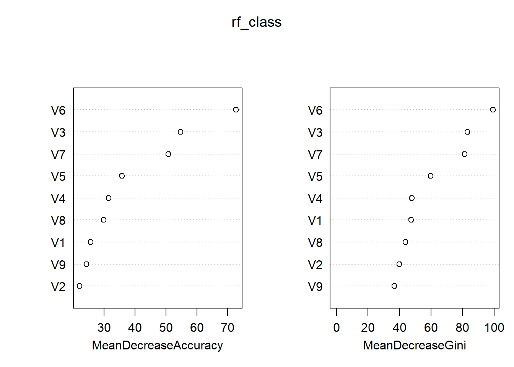
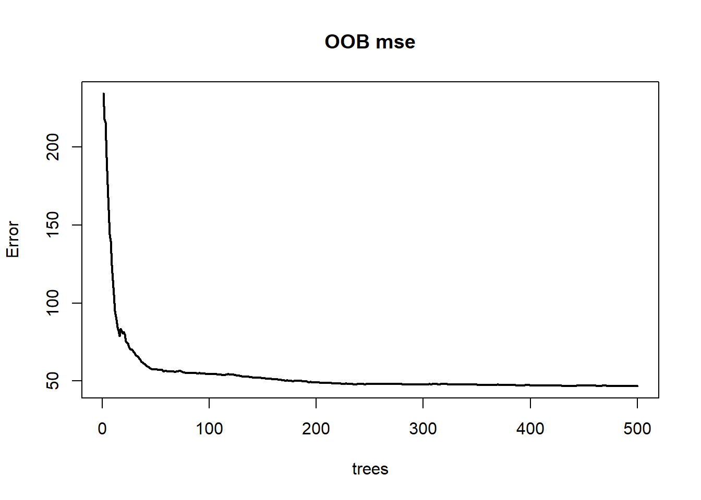
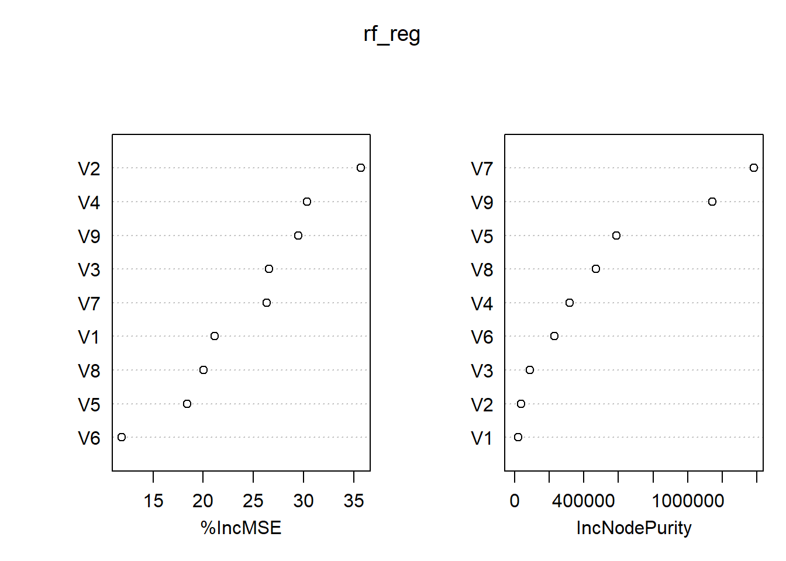
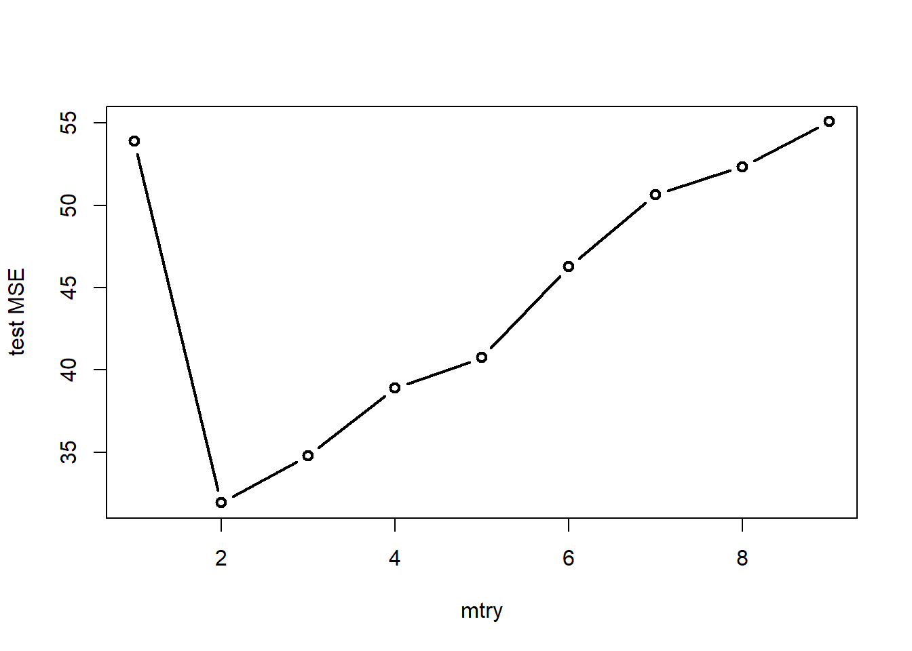

4.2 数据模拟
首先自定义函数，用于生成模拟数据。
# 自定义函数——生成多元正态数据
gen_data <- function(level, size, mu, sigma) {
# 初始化数据框
df = data.frame()
# 生成每个类别的数据
for (i in 1:level) {
# 生成类别标签
category_label = rep(LETTERS[i], size[i])
# 生成数据
category_data = as.data.frame(mvrnorm(n = size[i], mu = mu[[i]], Sigma = sigma[[i]]))
# 添加类别标签
category_data$category = factor(category_label)
# 将数据添加到数据框
df = rbind(df, category_data)
}
# 返回数据框
return(df)
}# 自定义函数——生成协方差矩阵
gen_sigma <- function(n) {
# 生成一个n x n的随机矩阵
L = matrix(runif(n * n, min = 1, max = 2), ncol = n)
diag(L) = abs(diag(L)) # 确保对角线上的元素为正
# 填充上三角部分为0
L[upper.tri(L)] = 0
# 计算Cholesky分解
A = L %*% t(L)
return(A)
}4.2.1 分类任务
这里生成具有3个水平的响应变量和9个预测变量。注意到不同类别之间的样本量存在一定的差异。
set.seed(123)
mu <- list(runif(9, min = 1, max = 4), runif(9, min = 1, max = 4), runif(9, min = 1,
max = 4))
sigma <- list(gen_sigma(9), gen_sigma(9), gen_sigma(9))
df_train <- gen_data(level = 3, size = c(100, 300, 600), mu = mu, sigma = sigma)
df_test <- gen_data(level = 3, size = c(30, 100, 180), mu = mu, sigma = sigma)接着运行模型。
rf_class <- randomForest(x = df_train[, -10], y = df_train$category, importance = T)
print(rf_class)##
## Call:
## randomForest(x = df_train[, -10], y = df_train$category, importance = T)
## Type of random forest: classification
## Number of trees: 500
## No. of variables tried at each split: 3
##
## OOB estimate of error rate: 16.2%
## Confusion matrix:
## A B C class.error
## A 34 35 31 0.66000000
## B 3 221 76 0.26333333
## C 0 17 583 0.02833333可以看到，袋外数据的分类错误率为16.2%。其中A类的分类错误率高达66%，这可能和训练集中的类别比例有关。
进一步地，绘制出分类错误率随决策树增加的变化趋势，可以更清晰地看到分类错误率的收敛情况。
plot(rf_class, col=c('black','red','blue','brown'),
lty=1, lwd=2, main='OOB err.rate')
legend('topright', legend=colnames(rf_class$err.rate),
col=c('black','red','blue','brown'),
lty=1, lwd=2)
图 1.1: 袋外数据的分类错误率
再来看看不同特征的重要程度。对于一棵树，在随机打乱某个特征的值的顺序之后，可以作差得到前后预测精度的下降情况，对于所有树取平均即可得到平均下降精度(MDA)。显然，如果MDA越大，说明该特征就越重要。同理，平均下降基尼系数(MDI)通过计算每个特征在所有树上节点分裂时导致的基尼系数平均下降量来评估特征的重要性。基尼系数反映了不纯度，下降得越多说明结点越容易从“不纯”走向了“纯”，意味着该特征在区分不同类别时能够较为显著地发挥作用。由图可知，两种评价准则得到的结果较为一致。

图 1.2: 分类_重要性度量
下面关注如何缓解类不平衡问题及如何选取最优参数mtry。
注意到训练集中类别的比例为1:3:6，存在一定程度的类不平衡问题。对此，在运行随机森林模型时可以设置classwt参数来设定各个类别的先验概率。
rf_class_prior <- randomForest(x = df_train[, -10], y = df_train$category, importance = T,
proximity = T, classwt = c(1, 3, 6))
print(rf_class_prior)##
## Call:
## randomForest(x = df_train[, -10], y = df_train$category, classwt = c(1, 3, 6), importance = T, proximity = T)
## Type of random forest: classification
## Number of trees: 500
## No. of variables tried at each split: 3
##
## OOB estimate of error rate: 15.8%
## Confusion matrix:
## A B C class.error
## A 32 37 31 0.68
## B 5 228 67 0.24
## C 0 18 582 0.03而对于参数mtry的选取，除了可以使用randomForest包自带的tuneRF()函数进行调参，还可以自己写个循环，直接根据测试集来选取最优参数。
err.rate <- c(1:9)
for (i in 1:9) {
rf = randomForest(x = df_train[, -10], y = df_train$category, mtry = i)
fit_test = predict(rf, df_test[, -10])
err.rate[i] <- sum(fit_test != df_test$category)/nrow(df_test)
}
plot(1:9, err.rate, type = "b", lwd = 2, xlab = "mtry", ylab = "test err.rate")
图 1.3: 分类_mtry调优
由图可知，当mtry=3时，在测试集上的袋外数据分类错误率达到最小，为14.2%。
4.2.2 回归任务
这里首先生成自变量数据，然后在自变量的线性组合的基础上添加噪声，得到因变量数据。
set.seed(111)
mu <- list(runif(9, min = 1, max = 4))
sigma <- list(gen_sigma(9))
df_train <- gen_data(level = 1, size = c(1000), mu = mu, sigma = sigma)
df_train$epsilon <- rnorm(1000, sd = 3)
df_train <- df_train %>%
mutate(y = 2 * V1 + 3 * V2 + V3 + 4 * V4 + 3 * V5 + V6 + 2 * V7 + 3 * V8 + 4 *
V9 + epsilon)
df_test <- gen_data(level = 1, size = c(100), mu = mu, sigma = sigma)
df_test$epsilon <- rnorm(100, sd = 3)
df_test <- df_test %>%
mutate(y = 2 * V1 + 3 * V2 + V3 + 4 * V4 + 3 * V5 + V6 + 2 * V7 + 3 * V8 + 4 *
V9 + epsilon)接着直接运行模型。
##
## Call:
## randomForest(x = df_train[, 1:9], y = df_train$y, importance = T)
## Type of random forest: regression
## Number of trees: 500
## No. of variables tried at each split: 3
##
## Mean of squared residuals: 46.75519
## % Var explained: 98.91从结果中可以看到，均方误差为46.7551872，自变量能解释的变异程度为98.91%。
进一步地，下面给出了模型的袋外数据MSE。

图 1.4: 袋外数据MSE
再来看看特征的重要性度量。其中%IncMSE表示重排某个特征前后袋外数据MSE的上升百分比，上升的幅度越大，说明该特征对模型更加重要。IncNodePurity则表示结点分列时残差平方和的下降情况。

图 1.5: 回归_重要性度量
最后，给模型参数mtry调调优。
mse <- c(1:9)
for (i in 1:9) {
rf = randomForest(x = df_train[, 1:9], y = df_train$y, mtry = i)
fit_test = predict(rf, df_test[, 1:9])
mse[i] <- sum((fit_test - df_test$y)^2)/nrow(df_test)
}
plot(1:9, mse, type = "b", lwd = 2, xlab = "mtry", ylab = "test MSE")
图 1.6: 回归_mtry调优
由图可知，当mtry=2时，在测试集上的袋外数据MSE达到最小，为31.9。